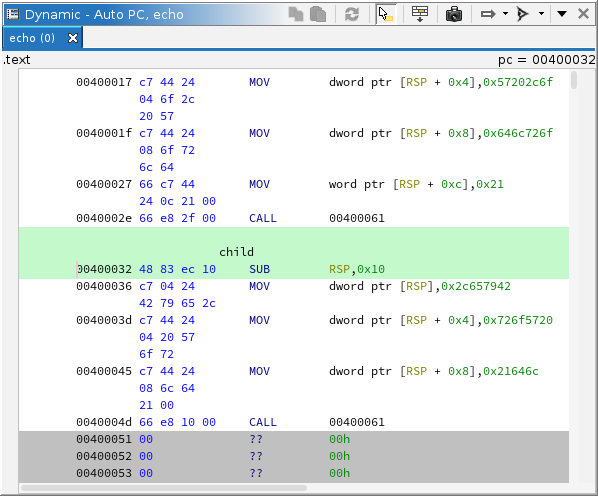

|  |
The dynamic listing is analogous to Ghidra's listing for static analysis, but in the dynamic context. It displays annotated memory contents from a target. More precisely, it displays recorded memory contents in a trace. In most use cases, that trace is "at the present," meaning it is the most recent memory from a live target. Multiple listings can be displayed simultaneously, using the same pattern as many other Ghidra windows. The "primary" listing is always displayed and generally tracks with the rest of the tool. Any listing can be "snapshotted," i.e., cloned. This is where dynamic listings differ from static listings. Static clones remain in place; they do not automatically navigate. Dynamic clones can still be configured to navigate, following the rest of the tool. A common use is to configure a clone to follow the stack pointer. Still, you can disable a listing's automatic navigation, so it behaves like a true clone. A current limitation is that you cannot use clones to display different points in time for the same trace.
Where applicable, the static listing's location is synchronized to the dynamic listing, and vice versa. The dynamic listing permits most of the same mark-up as the static listing. Any mark-up added to the dynamic listing is saved to the trace. All mark-up (and nearly all trace record types, for that matter) have a location in space and time. That is, they occupy an address range (like mark-up in Ghidra programs), but also a time range (unique to traces). When mark-up is added to the listing, it exists "from this time on". That is, its time interval is from the current time to infinity, i.e., it has been created but never destroyed. When mark-up is removed from the listing, its "destruction time" is set to just before the current time. If this would cause the mark-up to "never exist," i.e., its destruction time precedes its creation time, then the record is deleted altogether. This yields a mostly-intuitive mechanism for marking things up "in time," but the fact that mark-up is bound in time can still be surprising. For example, disassembling some instructions and then stepping back in time will cause that disassembly to disappear.
Because not all memory is recorded, some background coloring is used to indicate the state of attempted memory reads. Regardless of state, the most-recent contents, as recorded in the trace, are displayed in the listing, defaulting to 00. "Stale" memory, that is ranges of memory which have not been read at the current time, are displayed with a darker background. Where that memory is marked "read-only" and has been successfully read previously, that coloring is subdued, since the contents are not likely to have changed. Where a read was attempted but failed, the first address in the failed range is displayed with a pink background. Otherwise, up-to-date contents are displayed with the default background color.
The dynamic listing supports editing memory. See Control and Machine State. Such edits are performed as usual: Via the Patch actions, or by pasting byte strings. These edits may be directed toward a live target, the trace, or the emulator.
The listing provides a variety of actions, some for managing and configuring listings, and others for capturing memory from a target.
This action is always available in the menu. It creates a new listing window with the same configuration as the primary dynamic listing. It is equivalent to cloning the primary dynamic listing.
This action is available whenever there is a trace open in the listing. It is analogous to "Export Program," but for the current trace at the current time. This provides a mechanism for capturing a particular point in time from a trace as a static image. The exported image can be analyzed in Ghidra or another tool.
This action is only available on cloned dynamic listings. The primary listing always follows the tool's current thread. Disabling this toggle causes the clone to remain on its own current thread rather than following the tool's. The current thread is used when computing a location to navigate to automatically. It is only applicable when "Track Location" is set to something other than "Do Not Track."
This action is always available on all dynamic listings. It configures automatic navigation for the dynamic listing. When location tracking is enabled, the listing is automatically navigated to an address computed from the trace's or target's machine state. The address is displayed in the top right of the viewer. That address and its corresponding static address are also highlighted in green in the listing. If the address cannot be located in the listing, the address is displayed in red. The computed address is affected by the tool's current "coordinates," that is the selected thread, frame, and point in time. The options are pluggable, but currently consist of:
This action is available whenever a trace is active in the listing. It prompts the user for an address, which can be expressed in simple notation or Sleigh, then attempts to navigate to it. The expression is evaluated in the context of the current thread, frame, and point in time. If the current trace is live and at the present, the target may be queried to retrieve any machine state required to evaluate the expression. The expression may be in terms of labels, registers, and constants. Labels may come from the current trace or a program mapped into the trace. Ambiguities are resolved arbitrarily.
|
Some examples:
00401234 — A constant address in simple notation0x00401234:8 — A constant address in Sleigh notationmain + 10 — 10 bytes past the address of "main"RAX — The address in RAXRSP + 8 — The address of stack offset 8*:8 (RSP+8) — The address pointed to by stack offset 8This action is always available, but only on the primary dynamic listing. It configures location synchronization with the (primary) static listing. When enabled, navigation in either listing — including automatic navigation — automatically navigates to the corresponding location, if applicable, in the other. In general, "corresponding location" is computed using information about loaded modules reported by the debugger. For the finer details, see the Static Mappings window. When you navigate to a location contained by a module, but there is no corresponding static location, the listing logs a "missing module" to the console, offering either to import the module or map it to an existing program. If the cursor cannot be mapped, the other listing's location is left unchanged. If this does not seem correct. Check your module list and static mappings.
This action is always available, but only on the primary dynamic listing. It configures selection synchronization with the (primary) static listing. When enabled, selection in either listing automatically selects the corresponding ranges, if applicable, in the other. In general, "corresponding ranges" are computed using information about loaded modules reported by the debugger. For the finer details, see the Static Mappings window. Portions of the selection which cannot be mapped are omitted.
This action is available whenever the current context is dynamic and has a selection. It maps the current dynamic selection to corresponding static ranges and selects those in the static listing. In general, "corresponding ranges" are computed using information about loaded modules reported by the debugger. For the finer details, see the Static Mappings window. Portions of the selection which cannot be mapped are omitted. If no part of the selection is mappable, an error is displayed in the status bar. This can happen if the module list is missing, or Ghidra could not find the program for the current module.
This action is available whenever the current context is static and has a selection. It maps the current static selection to corresponding dynamic ranges and selects those in the dynamic listing. In general, "corresponding ranges" are computed using information about loaded modules reported by the debugger. For the finer details, see the Static Mappings window. Portions of the selection which cannot be mapped are omitted. If no part of the selection is mappable, an error is displayed in the status bar. This can happen if the module list is missing, or Ghidra could not find the program for the current module.
This action is offered as a resolution whenever a module cannot be automatically opened. This typically happens when the module's program database has crash data that can be recovered and/or needs a version upgrade. It will attempt to open the program, allowing Ghidra to prompt you about the situation.
This action is available when the current trace is "at the present" with a live target, and there is a selection of addresses in the dynamic listing. It will instruct the recorder to read and record the contents of memory for the selected range(s). Typically, the viewable addresses are automatically read, anyway — see the Auto-Read action.
This action is always available on all dynamic listings. It configures whether or not the memory range(s) displayed in the listing are automatically read and recorded. Like the Read Memory action, it is only permitted when the current trace is "at the present" with a live target. It occurs when the user scrolls the listing, or when the listing is otherwise navigated to a new location. Note that other components may read memory, regardless of this listing's configuration. For example, the recorder typically reads the page of memory pointed to by the program counter. In other words, this action cannot "disable all memory reads." The options are pluggable, but currently consist of: